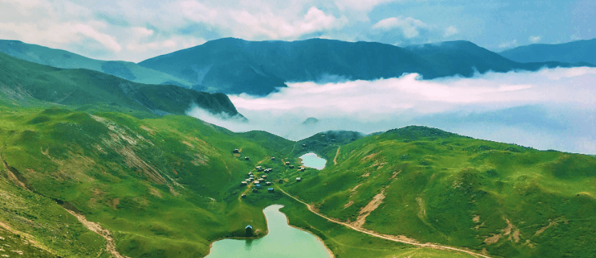

Nestled along the Black Sea, Adjara is a captivating region in Georgia known for its stunning landscapes, rich culture, and warm hospitality. Just as Rocky Balboa rose from humble beginnings, Adjara offers visitors a unique blend of natural beauty and cultural heritage that inspires and rejuvenates.
Adjara boasts diverse geography, with the towering Lesser Caucasus Mountains rising dramatically from the coastline. This region is a natural playground, offering breathtaking hikes through Mtirala National Park, where dense forests and cascading waterfalls await. The coastline features beautiful pebble and sandy beaches, with Batumi as the star attraction. Here, you can relax by the sea, enjoy water sports, or stroll along the vibrant promenade lined with cafes and shops, immersing yourself in the lively atmosphere.
The culture of Adjara is a rich tapestry woven from various influences, reflecting its history as a crossroads between East and West. The capital, Batumi, showcases eclectic architecture that ranges from modern skyscrapers to historic buildings. Take a leisurely walk along Batumi Boulevard and marvel at the famous Ali and Nino statue, symbolizing love and resilience. Be sure to indulge in the region's culinary delights, including the beloved Adjarian khachapuri, a delicious cheese-filled bread that brings comfort and satisfaction.
History buffs will find plenty to explore in Adjara. The ancient fortress of Gonio, believed to be the burial site of the legendary Greek hero Achilles, stands as a testament to the region's rich past. Charming churches and monasteries, such as the Batumi Cathedral of the Mother of God, provide serene spaces for reflection and admiration of the architectural beauty.

For those seeking adventure, Adjara offers a wealth of outdoor activities. Hike through the stunning mountain trails, enjoy paragliding over the picturesque coastline, or explore hidden caves and canyons. The Black Sea provides endless opportunities for swimming, sailing, and fishing, making it an ideal destination for both relaxation and exhilaration.
Whether you’re seeking relaxation on the beach, adventure in nature, or a taste of rich culture and history, Adjara has something for everyone. Just like Rocky's journey of perseverance and triumph, Adjara invites you to embrace its beauty and adventure. Come and discover the magic of Adjara for yourself—a destination that promises to inspire and invigorate!